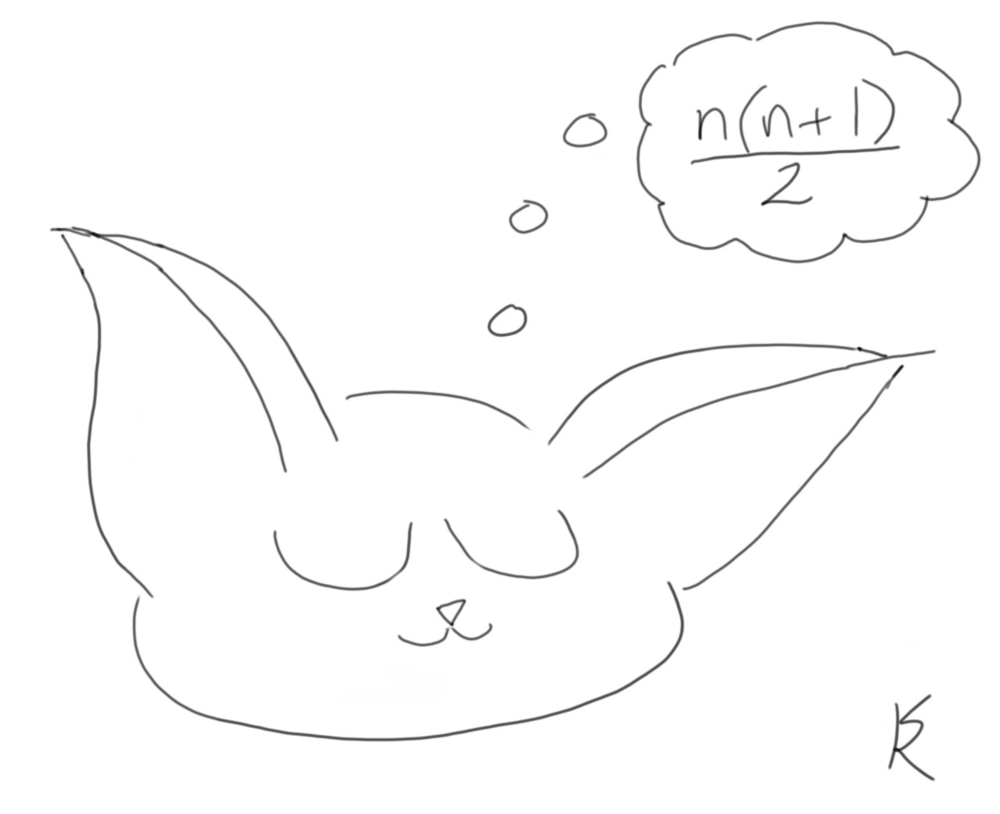

|
Code Examples by Susan Korgen. for 11+ years, my work has been proprietary, using a proprietary language. My résumé (link) describes this proprietary work. I started this portfolio to show code of my own that exercises my existing engineering skills and practices, while using common known languages, so that others can read my work. Below are links to code and demos. For detailed project descriptions, click More... in the Dev Time column. Guidelines for all projects follow the table. |
| Click to Demo | Click for Code | Features | Status Now | Dev Time | Project Notes |
|---|---|---|---|---|---|
|
Animate the classic recursion problem using pure, raw JavaScript, HTML, CSS, and SVG. The SVG graphics are not downloaded images; they are dynamically generated as SVG XML content when this code runs. Computed data for each tower height the user chooses (5, 6, ... , 12, 13) is retained during the session in case of a repeat demo. The code showcases UX and UI development best practices that are independent of coding language and technology stack. |
Minimum viable product. Graphically illustrates the cost of order 2n computation. Supports a user language choice of English, French, or Chinese and simple conventions to quickly add more user languages. The progress bar is animated on a different (faster) timer than the towers. The multiple timers work independently and are cleared appropriately. I tried more complex decorations on the progress bar, but users found these unhelpful, so I removed them. Paging controls (Next, Previous) when there are long lists of results to display on the screen. Comments at the end of hanoi/main.js list the specific planned updates from the current code, a to-do list to complete the example. This to-do list includes some UI/UX coding best practices that I think are too important to omit from a finished sample. |
12 days. More... ...Less |
A return to JavaScript and front end development work after 4 years using a proprietary, object-oriented database language in back end development. Decided to also use all new tools (Atom, GitHub, GitHub desktop, SketchBook) as a change from the proprietary IDE. Total time for this example included 2 full days review with JavaScript: The Good Parts by Douglas Crockford. Page 34 mentions the hanoi problem and provides a 3-line loop. Recursion can be challenging to visualize. I was inspired to build my hanoi animation as my first JavaScript code example. As I built the example, I saw I could shape it to demonstrate many UI/UX best practices that I learned during 7 years of front end development using JavaScript, prior to my more recent server side experience. The past work included building JavaScript UIs and more than one UI generation framework that output HTML and JavaScript |
||
|
Expand and contract table rows on this page. |
Done. |
2 days. More... ...Less |
Half a day: Manipulated the DOM using JavaScript. Why was this code so much quicker to complete than hanoi? It leverages language-agnostic skills I use daily. These skills transferred smoothly. Since 2016, in back end development, I have worked with structured data formats, transforming and storing data in a proprietary database that offers both object-oriented and SQL projections. When you spend all your time traversing hierarchical data structures and finding optimal paths to the data needed, the thinking is similar, regardless of language or output format: JSON, XML, classes, SQL result sets, FHIR, C-CDA, or other. |
|
Objectives for this portfolio are to:
Out of scope here, keeping in mind for future:
|
 |
|
In Iron Man ®2008 Marvel Universe, the villain industrialist screams at a failing engineer: "Tony Stark was able to build this in a cave! With a box of scraps!" It can be a challenge to replicate results, even when scriptwriters are handling the science. |
|